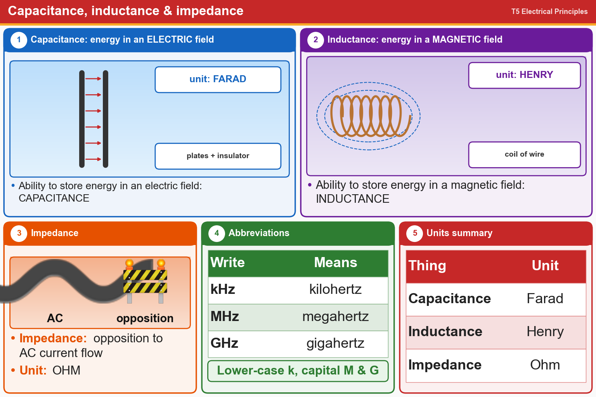

💡 Capacitor = electric field, farads. Inductor = magnetic field, henrys. Impedance = ohms.
📚 Key words
- Capacitance
- Ability to store energy in an ELECTRIC field. Unit: farad.
- Inductance
- Ability to store energy in a MAGNETIC field. Unit: henry.
- Impedance
- Opposition to AC current flow. Unit: ohm (same as resistance).
- kHz / MHz
- Kilohertz (thousand Hz) / megahertz (million Hz). Note the capital M and H.
Press Check on any question to see if you're right (it won't show the answer), or Grade at the bottom to grade the whole page.
T5C01
What describes the ability to store energy in an electric field?
✘A.Frequency
✘B.Inductance
✘C.Resistance
✔D.Capacitance
T5C02
What is the unit of capacitance?
✘A.Henry
✔B.Farad
✘C.Volt
✘D.Ohm
T5C03
What describes the ability to store energy in a magnetic field?
✘A.Capacitance
✔B.Inductance
✘C.Admittance
✘D.Resistance
T5C04
What is the unit of inductance?
✔A.Henry
✘B.Farad
✘C.Coulomb
✘D.Ohm
T5C05
What is the unit of impedance?
✔A.Ohm
✘B.Coulomb
✘C.Volt
✘D.Ampere
T5C12
What is impedance?
✘A.The inverse of resistance
✘B.The inverse of reactance
✔C.The opposition to AC current flow
✘D.The power handling capability of a component
T5C06
What is the abbreviation for kilohertz?
✘A.KHz
✔B.kHz
✘C.KHZ
✘D.khz
T5C07
What is the abbreviation for megahertz?
✔A.MHz
✘B.mHZ
✘C.Mhz
✘D.mHz